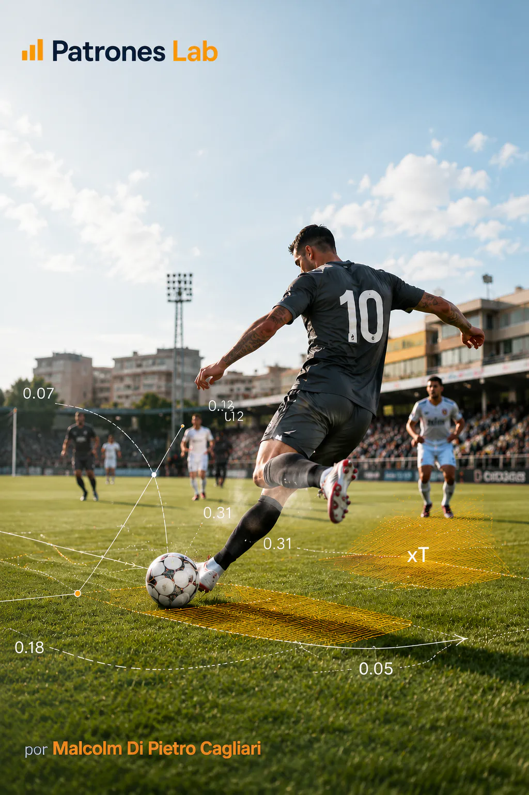

Proyecto 07 · Analítica de fútbol
Probabilidades en el Fútbol · Peligro Esperado (xT)
Modelo probabilístico de Peligro Esperado en el fútbol con datos públicos de StatsBomb. Se estima la probabilidad de gol en las próximas 5 jugadas.
CONTEXTO Y OBJETIVO
Medir el peligro generado por una acción de fútbol estimando cómo cambia la probabilidad de gol dentro de una ventana corta de posesión.
DATOS Y DIAGNÓSTICO
- Uso de datos públicos de StatsBomb como fuente de eventos.
- Construcción de variables espaciales y contextuales para representar cada acción.
- Estimación de una probabilidad de gol futura y lectura del aporte incremental de las acciones.
ENTREGA Y APRENDIZAJE
La entrega traduce eventos deportivos en una lectura probabilística, conectando preparación de datos, modelado y explicación visual del peligro generado.